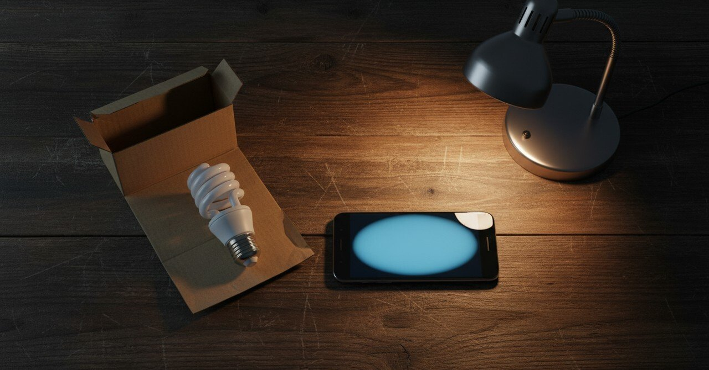

動画投稿が、うまくできなかったなー、と書いた深夜

2024年12月13日、23時27分。動画を1本投稿しようとして、編集の段階で躓いて、結局その日のうちには出せなかった。深夜のメモに「動画投稿うまくできなかったなー」と打ち込んだ。
その日の現場
撮影は朝のうちに終わっていた。スマホで2分の話を撮って、ノイズ除去のアプリにかけて、簡単なテロップを入れる、というだけのことだった。 昼に編集を始めたら、テロップの位置がずれて、サイズが揃わなくて、書き出したら音と画がほんの少し遅れていた。直す、確認する、また直す、を5回繰り返したら夜になった。
23時を過ぎたところで、いったん閉じた。 メモに書いた最初の一行は「動画投稿うまくできなかったなー」だった。短く、言い訳もせずに、そのまま書いた。
その下に、「成果を求めてしまう自分がいるんだろうな」と書き足した。
並んでいたこと
その日は他に、夕方近くのコンビニで電球を1つ買った。158円。台所の天井のひとつが切れていたから付け替えた。新しい電球は前のより少し白くて、台所が違う場所に見えた。 夜は冷蔵庫の残り野菜で味噌汁を作った。豆腐は前日に買ったやつを使い切った。
電球を変えたことのほうが、その日の達成だったかもしれない。
自分への言葉
メモはそのあと、自分への独り言に変わっていた。 「まずは形にすることが大切だ」と書いた。 「一つずつこなすことで必ず道は開けてくるから」と書いた。 最後に「まこたんならできる」と打ち込んだ。普段は絶対に書かない種類の文だった。深夜のメモだから書けた。
書いて閉じて、寝た。動画は翌々日に出した。出してみたら、再生数は20も行かなかった。それでもよかった。
まだ続いていること
あの日、出せなかった動画を出さずに諦める手もあった。出さないほうが、傷つかない選択だった。 でも、深夜のメモで「形にすることが大切だ」と自分に言った手前、出さないわけにいかなくなっていた。
その後の1年で、形にしただけのものはたぶん30以上ある。半分以上は誰にも見られていない。 でも、形にする癖だけは、あの夜のメモから始まって、いまも続いている。